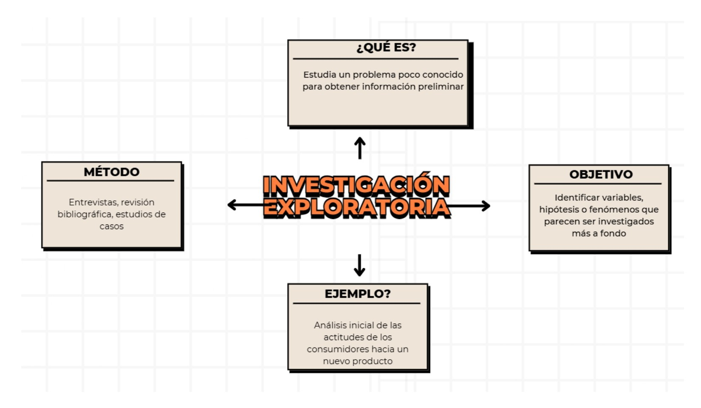

INVESTIGACIÓN EXPLORATIVA
También conocida como investigación exploratoria, es el quinto tipo de investigación. Cada una de las investigaciones anteriores tiene algo especial. Descubramos qué hace especial a esta.
¿Qué es la investigación explorativa?
La investigación exploratoria es un tipo de estudio que se usa cuando hay poca información sobre un tema y se necesita comprenderlo mejor. Su objetivo no es obtener resultados definitivos, sino descubrir ideas, identificar patrones y formular preguntas para futuras investigaciones.
Este tipo de investigación suele basarse en la observación, entrevistas abiertas y revisión de fuentes existentes para generar hipótesis preliminares.
Importancia
1. Ayuda a entender temas nuevos o poco estudiados.
2. Permite formular preguntas clave para investigaciones futuras.
3. Es útil en innovación, ciencias sociales y desarrollo de nuevos productos.
4. Reduce riesgos al probar ideas antes de invertir en estudios más complejos.
Ejemplo
Estudio preliminar de un mercado emergente antes de lanzar un producto
Las empresas que desean lanzar un nuevo producto en un mercado emergente primero realizan una investigación exploratoria para comprender mejor las oportunidades y desafÃos. En esta fase, no se buscan datos numéricos exactos, sino información general que ayude a definir estrategias futuras.
Para ello, pueden realizar entrevistas con posibles clientes, analizar tendencias de consumo y observar cómo funcionan productos similares en otros mercados.
Este tipo de investigación es clave para reducir riesgos antes de invertir grandes recursos en el desarrollo y producción de un nuevo producto. Por ejemplo, muchas empresas tecnológicas investigan la adopción de inteligencia artificial en diferentes paÃses antes de lanzar nuevas soluciones basadas en esta tecnologÃa.
¿Tienes alguna duda sobre este tipo de investigación?
No te preocupes, te dejamos el siguiente mapa conceptual, el cual explica a detalle y de manera resumida de lo que trata este tipo de investigación.
Para que todo quede más claro, te dejamos el siguiente video explicativo:
Esperamos que con el siguiente video puedas resolver tus dudas y te quede más claro este tipo de investigación.